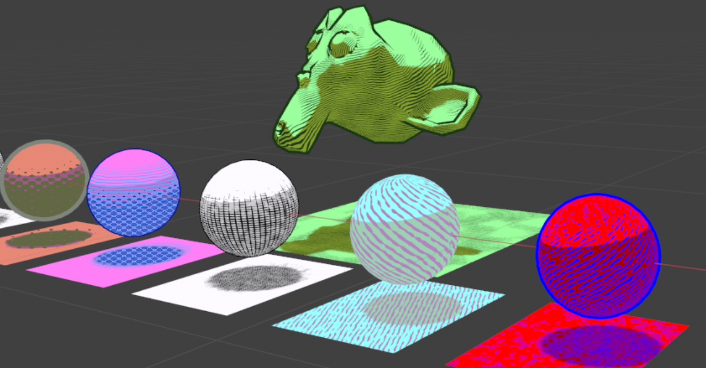

🎨 CATS
Behold CATS, or, the Computer Artist's Tools Suite! This Python add-on tools menu for Blender allows digital artists to create and control non-photorealistic rendering styles without needing to edit shader graphs directly. The intention is to enable novice 3D artists to eschew daunting shader graphs, while still being able to make use of more complex rendering styles in their models, backgrounds, and environments (for projects like comics, games, assets, etc).
- Created a user-friendly UX/UI that makes use of/mimics existing digital art software conventions, like having stylized shading layers that can be added to and subtracted from a master shader
- Procedurally generated shaders come with controls to tune final shader appearance, making it so users don't need to construct the shaders themselves, but still maintain an easy method of adjusting shader properties to their liking
- CATS so far includes: toon shading, hatched shading, dithered shading, local and global object outlines, batch processing, and CATS shader preset saving and loading


Accredation
This tool is being developed solely by me... and with help from various Blender resources and gurus online! It is still in progress, and being tested with users regularly; but I hope to release the first public build by the end of May 2022 on Github, and link to the paper I am writing for my thesis here.